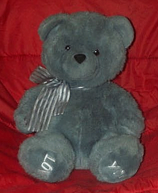
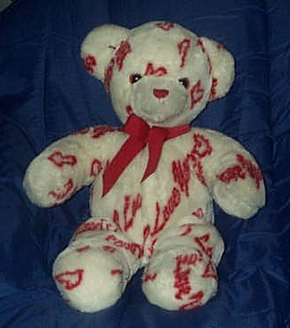

Welcome to The Unwanted Tedy Bear Adoption Agency.
What we do here.
Here at The Unwanted Tedy Bear Adoption Agency we try and provide
good homes for unwanted, lost, and abounded Tedy Bears. All adoupted Tedys
will come with a
cirtifacit
of adoption and a care sheet. Please give a good home to thease poor
Tedy Bears.
Tedy's up for Adoption.
Adopted Tedy's.
Founding tedys.
 |
 |
Ted d. Bear |
Love Butt |
| My story: I was the last bear on the shelf. Nobody wanted me because
the love you on my feet my love is upside down. When my owner found me he
had to take me home eaven tho my love is upside down. |
My story: I thought I had a home but I got left on
the shelf where i dident belong and nobody could find me. My owner saw me
siting there looking at her with a sad look. She took me home that
night. |
|